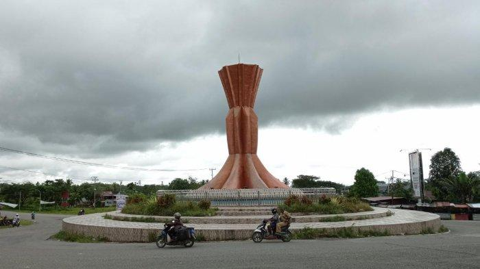
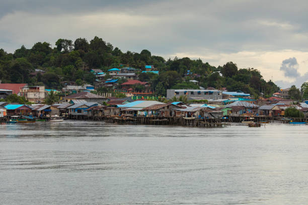
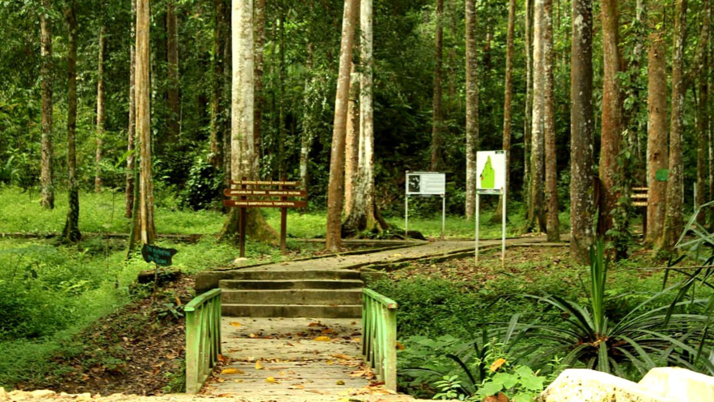

Sejarah

Sorong adalah sebuah kota di provinsi Papua Barat Daya, Indonesia, yang memiliki sejarah panjang sebagai pusat perdagangan dan jalur transportasi laut. Nama "Sorong" berasal dari kata "Soren" dalam bahasa Biak, yang berarti "laut yang dalam dan bergelombang." Wilayah ini telah menjadi tempat persinggahan para pedagang dari berbagai belahan dunia, termasuk Ternate dan Tidore, sejak abad ke-16. Pada masa kolonial Belanda, Sorong menjadi pusat penting karena kedekatannya dengan jalur laut internasional dan sumber daya alam yang melimpah, seperti kayu dan minyak bumi.
Pada abad ke-20, Sorong mengalami perkembangan pesat dengan hadirnya perusahaan minyak Belanda, Nederlandsche Nieuw Guinea Petroleum Maatschappij (NNGPM), yang membangun fasilitas eksplorasi di kawasan tersebut. Setelah Indonesia merdeka, Sorong menjadi salah satu wilayah strategis di Papua Barat untuk kegiatan ekonomi, terutama di sektor pertambangan, perikanan, dan kehutanan. Hingga kini, kota ini terus berkembang menjadi pusat ekonomi dan transportasi penting di kawasan timur Indonesia.
Geografis

Sorong terletak di ujung barat Pulau Papua, berbatasan langsung dengan Laut Seram di selatan dan Samudra Pasifik di utara. Secara geografis, Sorong memiliki topografi yang bervariasi, mulai dari pesisir pantai yang datar hingga perbukitan dan pegunungan di bagian pedalaman. Kota ini berada di wilayah yang strategis karena menjadi gerbang menuju Kepulauan Raja Ampat yang terkenal akan keindahan bawah lautnya. Iklim di Sorong adalah tropis, dengan curah hujan tinggi sepanjang tahun dan suhu rata-rata berkisar antara 24°C hingga 32°C.
Wisata
Sejak semakin berkembangnya infrastruktur di Sorong, Taman Wisata Alam Sorong dan Mooi Park telah menjadi tujuan populer bagi wisatawan lokal maupun mancanegara yang ingin menikmati keindahan alam Papua. Taman Wisata Alam Sorong menawarkan keanekaragaman hayati yang kaya dengan hutan tropis yang masih asri, ideal bagi pecinta alam dan penggemar ekowisata. Sementara itu, Mooi Park dikenal sebagai ruang hijau kota yang memberikan suasana tenang dan nyaman, cocok untuk bersantai dan menikmati keindahan pemandangan alam di tengah kota.
Taman Wisata Alam Sorong

Taman Wisata Alam Sorong merupakan kawasan konservasi yang menawarkan kekayaan biodiversitas khas Papua, meliputi flora dan fauna yang unik serta lanskap hutan tropis yang masih terjaga keasriannya. Tempat ini menjadi destinasi favorit bagi para peneliti, pecinta alam, dan wisatawan yang ingin menjelajahi keindahan alam liar, termasuk burung-burung endemik Papua. Selain untuk wisata, taman ini juga berfungsi sebagai area pelestarian ekosistem yang penting bagi keseimbangan lingkungan di wilayah Sorong.
Mooi Park

Mooi Park, di sisi lain, adalah taman kota yang terletak di tengah Sorong, berfungsi sebagai ruang hijau publik yang nyaman dan asri. Dengan pepohonan rindang, area bermain, dan fasilitas rekreasi, Mooi Park menjadi tempat favorit bagi warga lokal untuk bersantai, berolahraga, atau sekadar menikmati udara segar. Taman ini juga sering digunakan untuk acara komunitas dan kegiatan sosial, menjadikannya sebagai pusat aktivitas masyarakat di tengah kota yang sibuk.